Document Class: Meeting Records
Caveat. The definitions below are to be considered only as a general description with the sole purpose of providing an indication of the types of documents that may belong to each class and subclass.
UN document class | Meeting Records |
subclass | Verbatim Record Description: first-person accounts of meetings. |
AKN4UN
document class | AKN | AKN4UN | UN Document | AKN4UN |
documentType
mandatory | subtype
mandatory | sub-class | @name subclass mandatory |
| value is prescribed | | value is suggested |
meeting records | <debate> | record | verbatim record | verbatimRecord |
function | A first-person account of meetings. Verbatim documents are meant to be word-by-word records of the activities of the different bodies during meetings. Function documents containing full first-person records of a meeting (verbatim). Structure reflects the different section of the debates and/or alternation of questions and answers that take place during meetings discussions. |
authors | UN principal and subsidiary organs, funds, programs, specialized agencies, other entities deliberative bodies of intergovernmental organizations, conference, commission, etc. |
editors | Secretariats of the assemblies, councils, conferences, boards, or international organizations, governmental organizations, etc. |
Caveat. What follows is the modelling and description of the "Meeting Records Document Class" (logical meeting records) that is not specific to the meeting records of any organization in particular. It does list all the possible characteristics that meeting records may have across all the UN organizations, since the objective is to cover all the variances that may exist. The description and modelling of the publications in which a meeting records may be published is presented in the "Publication Document Class".
The Meeting Records Document Class will have to be localised by the different organizations, based on their specific editorial and style traditions, by selecting only the elements that are required to model all the relevant structural and semantic parts of a specific typology of meeting records.
Please note that the XML examples provided in the next sections should not be considered complete. Examples show only the essential structural elements of the mark-up and only the ones relevant in a specific context without any semantic or presentation markup in order to keep the XML "humanly’" readable.
The structure of verbatim records may have the following elements:
Identification part Title, identification, date, and the like. | Always present |
Main content The main part reflects the sequence of agenda items to be considered and alternation of questions and answers. | Always present. |
Closing formula e.g. dates, signatures, formulas, etc. | Not always present. |
Annexes e.g. list of participants, etc. | Not always present. |
document type | <akomaNtoso> <debate name="{AKN4UN:subclass"}> |
metadata | <meta> <identification source="#{manifestationAuthor}"> </identification> </meta> |
identification part | <preface> (...) </preface> |
main content closing formula | <debateBody> (...) <debateSection name="conclusion"> (…) . <debateSection> </debateBody> |
attachments | <attachments> (...) </attachments> |
| </debate> </akomaNtoso> |
Below are some practical examples of the Akoma Ntoso mark-up of the main blocks of a verbatim record.
document type | <akomaNtoso> <debate name="verbatimRecord"> |
identification part | <preface> ……… </preface> | 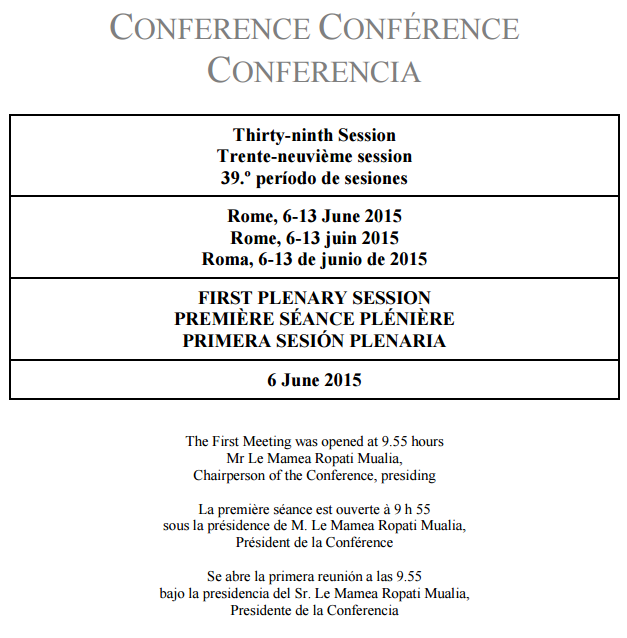 |
main content | <debateBody> ……… | 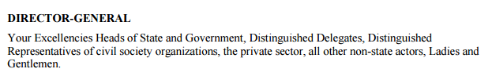 |
<debateSection name="conclusion"> (…) . <debateSection> | 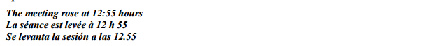 |
</debateBody> |
| </debate> </akomaNtoso> |
Identification part: <preface>
The identification part <preface> </preface> is meant to include any matter found from the very beginning of a document up to where the <debateBody> begins
It may contain information related to the title of the document, identification numbers, date of the meeting, etc. It may include long titles, tables of contents, etc.
Verbatim records may have some or all the info below, not necessarily in the order shown:
session
title
meeting (name/number/date/time/place)
reporting body (plenary / committee / commission)
document status
presiding officers
For information about element specific usage, see 1.2 <preface>.
|
source | 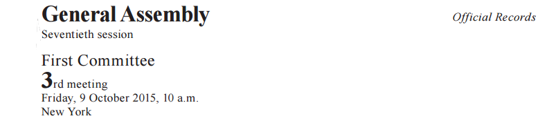 |
modelling | <preface> <p> <docAuthority refersTo="#generalAssembly">General Assembly</docAuthority> <session refersTo="#session" value="70">Seventieth session</session> <docStatus refersTo="#officialRecord">Official Records</docStatus> <docCommittee refersTo="#firstCommittee" value="first"> First Committee</docCommittee> <event refersTo="#3rdmeeting">3rd meeting Friday, < docDate date="2015-10-09">9 October 2015</docDate>, <recordedTime time="2015-10-09T10:00:00" refersTo="#startTime">10 a.m.</recordedTime> <location refersTo="#newYork">New York</location> </event> </p> </preface> |
|
|
source | 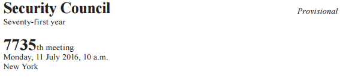 |
modelling | <preface> <p> <docAuthority refersTo="#securityCouncil">Security Council</docAuthority> <inline refersTo="#seventy-firtYear" name="year" value="71" >Seventy-first year</inline> <docStatus refersTo="#provisional">provisional</docStatus> <event refersTo="#7735meeting">7735th meeting Monday, <docDate date="2016-07-11">11 July 2016</docDate>, <recordedTime time="2016-07-11T10:00:00" refersTo="#startTime">10 a.m.</recordedTime> <location refersTo="#newYork">New York</location> </event> </p> </preface> |
|
source | 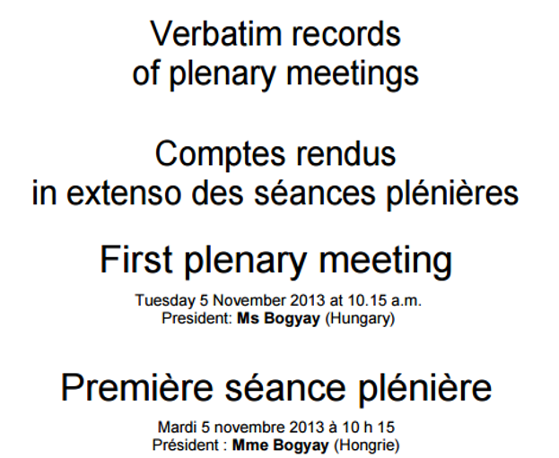 |
modelling | <preface> <block wId="block_1" name="container"> <docType wId="docType_1" xml:lang="eng">Verbatim records of plenary meetings</docType> <docType wId="docType_2" xml:lang="fra" alternativeTo="#docType_1"> Comptes rendus in extenso des séances plénières</docType> </block> <block wId="block_2" xml:lang="eng" name="container"> <event refersTo="#firstPlenaryMeeting">First plenary meeting</event> Tuesday <docDate date="2013-11-05">5 November 2013</docDate> at <recordedTime time="2013-11-05T10:15:00" refersTo="#startTime">10.15 a.m.</recordedTime> <role refersTo="#president">President</role>: <person refersTo="#bogyay" as="#president">Ms Bogyay</person> (<organization refersTo="#memberHungary">Hungary</organization>) </block> <block wId="block_3" xml:lang="fra" alternativeTo="#block_2" name="container"> <event refersTo="#firstPlenaryMeeting">Première séance plénière</event> Mardi <docDate date="2013-11-05">5 novembre 2013</docDate> à <recordedTime time="2013-11-05T10:15:00" refersTo="#startTime">10.15 a.m.</recordedTime> <role refersTo="#president">Président</role> : Mme <person refersTo="#bogyay" as="#president">Bogyay</person> (<organization refersTo="#memberHungary">Hongrie</organization>) </block> </preface> |
|
source | 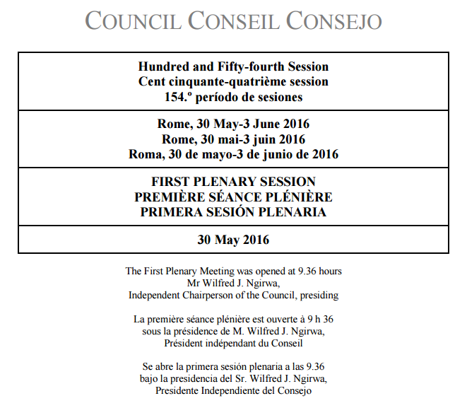 |
modelling | <preface> <p> <block name="block" eId="block_1"> <docAuthority xml:lang="eng" wId="docAuthority_1">COUNCIL </docAuthority> <docAuthority xml:lang="fra" alternativeTo="#docAuthority_1">CONSEIL </docAuthority> <docAuthority xml:lang="spa" alternativeTo="#docAuthority_1">CONSEJO</docAuthority> </block> <block name="block" eId="block_2"> <session wId="session_1" value="154" refersTo="#session" xml:lang="eng"> Hundred and Fifty-fourth Session</session> <session wId="session_2" value="154" refersTo="#session" xml:lang="fra" alternativeTo="#session_1">Cent cinquante-quatrième session</session> <session wId="session_3" value="154" refersTo="#session" xml:lang="spa" alternativeTo="#session_1">154.º período de sesiones</session> </block> <block name="block" eId="block_3"> <location wId="location_1" refersTo="rome" xml:lang="eng">Rome</location>, <event refersTo="#eventDuration"> <docDate date="2016-05-30" wId="docDate_1" xml:lang="eng" refersTo="#startDate"> 30 May</docDate>- <docDate wId="docDate_2" date="2016-06-03" refersTo="#endDate" xml:lang="eng"> 3 June 2016</docDate> </event> <location wId="location_2" refersTo="rome" xml:lang="fra" alternativeTo="#location_1"> Rome</location>, <event refersTo="#eventDuration"> <docDate date="2016-05-30" wId="docDate_3" xml:lang="fra" refersTo="#startDate" alternativeTo="#docDate_1">30 mai</docDate>- <docDate wId="docDate_4" date="2016-06-03" refersTo="#endDate" xml:lang="fra" alternativeTo="#docDate_2">-3 juin 2016</docDate> </event> <location wId="location_3" refersTo="rome" xml:lang="spa" alternativeTo="#location_1"> Roma</location>, <event refersTo="#eventDuration"> <docDate date="2016-05-30" wId="docDate_5" xml:lang="spa" refersTo="#startDate" alternativeTo="#docDate_1">30 de mayo</docDate> -<docDate wId="docDate_6" date="2016-06-03" refersTo="#endDate" xml:lang="spa" alternativeTo="#docDate_2">-3 de junio de 2016</docDate> </event> (omissis) </block></p> </preface> |
|
Main content: <debateBody>
The main content <debateBody> </debateBody> is meant to include any matter found after the <preface> up to the <conclusion> or <attachments> or the end of the document. Additionally, the main part of the document that is characterized by a structure that reflects the sequence of agenda items to be considered and alternation of questions and answers that takes place during the parliamentary and committee works. Usually, it also reports the name of the presiding officer/s.
Agenda items usually include headings that subdivide the report. Speakers are introduced by titles alone, e.g. Chairperson or Mr. or Ms. [last name] Member State / organization / capacity (person, in name of country or group / position.
The <debateBody> element is used to model texts resulting from the verbatim transcription of the parliamentary or committee works. The structure reflects the different sections of the debates, and the questions and answers that may take place during parliamentary proceedings. Within the different subdivisions blocks of text or spoken word ("speech") of individuals participating in the debate may be specified, as well as comments from the drafters. See in the table below the elements supported:
AKN4UN Document Classes by body types and supported elements
AKN4UN
Doc Class | AKN
document type | body element | Supported elements |
Meeting Records | <debate> | <debateBody> | Element type: debateBodyType address, adjournment, administrationOfOath, communication, debateSection, declarationOfVote, ministerialStatements, nationalInterest, noticesOfMotion, oralStatements, papers, personalStatements, petitions, pointOfOrder, prayers, proceduralMotions, questions, resolutions, rollCall, writtenStatements |
Element group: blockElements block, blockContainer, blockList, foreign, ol, p, table, tblock, toc, ul |
The <debateSection> is a generic element for all unnamed subdivisions and all those subdivisions whose appropriate name is not listed here; a suitable name as per the local required name may be set in the @name attribute.
Within all the above sections, individual text structures may be marked up with one of eight elements:
<speech> : speech dialogue, when someone speaks in the assembly.
<question> : question dialogue, when someone asks a formal question.
<answer> : answer dialogue, when someone makes a formal response to a question.
<scene> : description of some action performed during the assembly like applause, shouting, crying, etc.
<narrative> : narrative part of what happened in the assembly.
<summary> : summary of an event like the result of a voting.
<other> : other dialogue.
<speechGroup> : this element is meant for collecting within a single, annotated group an otherwise unmarked sequence of individual speeches, of which there is one main flow of speeches.
Those containers that refer to actual utterances (i.e. <speech>, <question>, <answer>) have a particular structure which provides a set of attributes and elements:
@from : identifies the speaker in the verbatim text, e.g when a <question> is addressed to a specific addressee.
@to : reference to the addressee of the speech, if present in the text of the document.
@by : reference to the person making the speech.
@as : reference to a role of the person making the speech. For example, a member of an assembly may formally speak as a representative of their country or in a personal capacity in one instance and, in another instance, as the chairman of a committee.
We have also the inline element <remark>, which is used for the specification of editorial remarks (e.g. applauses, laughter, etc.) especially within debate records; and it may be qualified by the @type attribute which may take four different {akn:list} values:
sceneDescription : describes the scene, e.g. the minority party leaves the room shouting out slogans.
phenomenon : describes a phenomenon of some sort, e.g. – raining, loud noise.
caption : describes a purely visual scene, e.g. caption to an image that is shown on a screen.
translation : translates words or sentences that may have been spoken in a language different from the language of the document.
|
source | 
|
modelling | <debateBody> <debateSection name="openingSection"> <p> <role refersTo="#chair">Chair</role>: <person refersTo="#vanOosterom" as="#chair">Mr. Van Oosterom</person> . . . . . . . . . . . . . . . . . . . . . . . . . . . . . . . . . . . . . (<organization refersTo="#memberNetherlands">Netherlands</organization>) </p> <p>The <event refersTo="#meeting">meeting was called to order at <recordedTime time="2015-09-16T10:00:00-00:00" refersTo="#startTime"> 10 a.m.</recordedTime> </event> </p> </debateSection> </debateBody> |
|
|
text |
|
modelling | <debateBody> <debateSection eId="sec_1" name="section"> <heading>Agenda items 88 to 105 ( <docStage refersTo="#continuation ">continued</docStage>)</heading> <debateSection eId="sec_1__div_1" name="division"> <heading>General debate on all disarmament and international security agenda items</heading> <speech by="#namePerson" as="#chair"> <from>The Chair:</from> <p> In accordance with our programme of work, we will begin with the traditional exchange with the Acting High Representative for Disarmament Affairs on follow-up of draft resolutions and decisions adopted by the Committee at its previous sessions and the presentation of reports. </p> </speech> </debateSection> </debateSection> </debateBody> |
|
source | 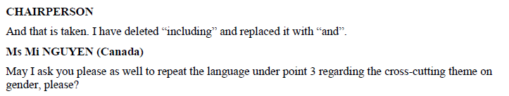 |
modelling | <debateSection eId="para_1" name="section"> <speech by="#{namePerson" as="chairperson" eId="para_1__speech_1"> <from refersTo="#chairperson">CHAIRPERSON</from> <p>And that is taken. I have deleted "including" and replaced it with "and".</p> </speech> <speech by="#mi.nguyen" as="#memberCanada" eId="para_1__speech_2"> <from refersTo="#mi.nguyen">Ms Mi NGUYEN (<organization refersTo="#memberCanada">Canada</organization>) </from> <p> May I ask you please as well to repeat the language under point 3 regarding the cross-cutting theme on gender, please? </p> </speech> </debateSection> |
|
source | 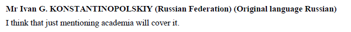 |
modelling | <debateSection eId="para_10" name="section"> <speech by="#memberRussianFederation" eId="para_10__speech_1"> <from refersTo="#ivan.g.konstantinopolskiy">Mr Ivan G. KONSTANTINOPOLSKIY (<organization refersTo="#memberRussianFederation">Russian Federation</organization>) (<inline name="originalLanguage">Original language Russian</inline>) </from> <p> I think that just mentioning academia will cover it. </p> </speech> </debateSection> |
|
source | 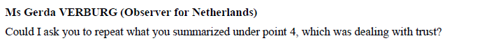 |
modelling | <debateSection eId="para_11" name="section"> <speech by="#gerda.verburg" as="#observer" eId="para_11__speech_1"> <from refersTo="#gerda.verburg">Ms Gerda VERBURG (<role refersTo="#observer">Observer</role> for <organization refersTo="#memnerNetherlands">Netherlands</organization>) </from> <p> Could I ask you to repeat what you summarized under point 4, which was dealing with trust? </p> </speech> </debateSection> |
|
source | 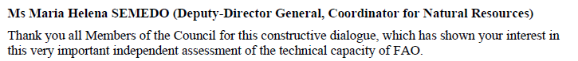 |
modelling | <debateSection eId="para_12" name="section"> <speech by="maira.helena.semedo" as="#deputyDirectorGeneral" eId="para_13__speech_1"> <from refersTo="#maira.helena.semedo">Ms Maria Helena SEMEDO (<role refersTo="#deputyDirectorGeneral">Deputy-Director General</role>, <role refersTo="#coordinatorNaturalResources">Coordinator for Natural Resources </role>) </from> <p> Thank you all Members of the Council for this constructive dialogue, which has shown your interest in this very important independent assessment of the technical capacity of FAO. </p> </speech> </debateSection> |
|
|
source | 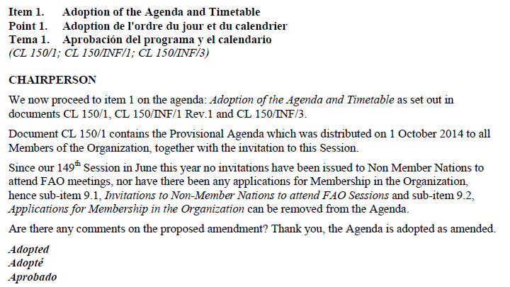 |
modelling | <debateSection name="sec_1" eId="item_1"> <num>Item 1.</num> <num>Point 1.</num> <num>Tema 1. </num> <heading xml:lang="eng" eId="heading_1">Adoption of the Agenda and Timetable </heading> <heading xml:lang="fra" eId="heading_2" alternativeTo="#heading_1"> Adoption de l'ordre du jour et du calendrier </heading> <heading xml:lang="spa" eId="heading_3" alternativeTo="#heading_1"> Aprobación del programa y el calendario</heading> <subheading>(<refhref="/akn/un/{documentIRIparts}">CL 150/1</ref>; <ref href="/akn/un/{documentIRIparts}">CL 150/INF/1</ref>; <ref href="/akn/un/{documentIRIparts}">CL 150/INF/3</ref>)</subheading> <speech by="#smith" to="#all" as="#chair" xml:lang="eng"> <from>CHAIRPERSON </from> <p> We now proceed to item 1 on the agenda: Adoption of the Agenda and Timetable as set out in documents CL 150/1, CL 150/INF/1 Rev.1 and CL 150/INF/3.</p> <p> Document CL 150/1 contains the Provisional Agenda which was distributed on 1 October 2014 to all Members of the Organization, together with the invitation to this Session. </p> <p> Since our 149th Session in June this year no invitations have been issued to Non Member Nations to attend FAO meetings, nor have there been any applications for Membership in the Organization, hence sub-item 9.1, Invitations to Non-Member Nations to attend FAO Sessions and sub-item 9.2, Applications for Membership in the Organization may be removed from the Agenda.</p> <p> Are there any comments on the proposed amendment? Thank you, the Agenda is adopted as amended. </p> </speech> <scene xml:lang="eng"> <remark xml:lang="eng" type="phenomenon" eId="remark_10" refersTo="#adopted"> Adopted</remark> <remark xml:lang="fra" type="phenomenon" eId="remark_11" alternativeTo="remark_10" refersTo="#adopted">Adopté</remark> <remark xml:lang="esp" type="phenomenon" eId="remark_12" alternativeTo="remark_10" refersTo="#adopted"> Aprobado</remark> </scene> <debateSection eId="sec_1__sec_1" name="section"> <speech by="#namePerson" to="#all" as="#chair" xml:lang="eng"> <from>CHAIRPERSON </from> <p>We can move on to Item 10 of the Agenda, Working Methods of the Council.</p> </speech> </debateSection> </debateSection> |
|
source | 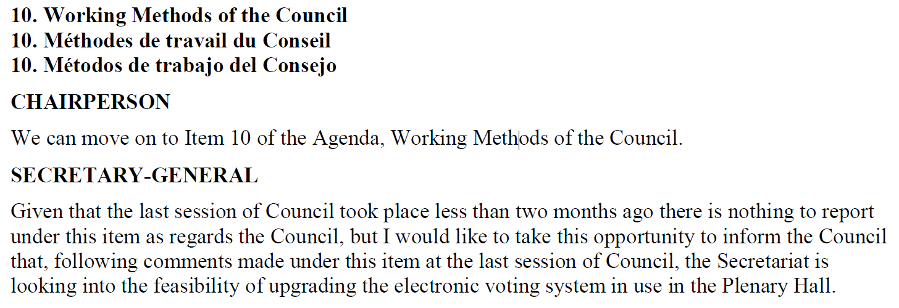 |
modelling | <debateBody> <debateSection name="sec_10" eId="item_10"> <num xml:lang="eng" eId="num_1>10. </num> <heading xml:lang="eng" eId="heading_1">Working Methods of the Council </heading> <num xml:lang="fra" alternativeTo="#num_1">10. </num> <heading xml:lang="fra" eId="heading_2" alternativeTo="#heading_1"> Métho des de travail du Conseil </heading> <num xml:lang="spa" alternativeTo="#num_1">10. </num> <heading xml:lang="spa" eId="heading_3" alternativeTo="#heading_1"> Métodos de trabajo del Consejo</heading> <debateSection eId="sec_10__sec_1" name="section"> <speech by="#smith" to="#all" as="#chair" xml:lang="eng"> <from>CHAIRPERSON </from> <p>We can move on to Item 10 of the Agenda, Working Methods of the Council.</p> </speech> <speech by="#down" to="#all" as="#secretary" xml:lang="eng"> <from>SECRETARY-GENERAL </from> <p> Given that the last session of Council took place less than two months ago there is nothing to report under this item as regards the Council, but I would like to take this opportunity to inform the Council that, following comments made under this item at the last session of Council, the Secretariat is looking into the feasibility of upgrading the electronic voting system in use in the Plenary Hall. </p> </speech> <speech by="#smith" to="#all" as="#chair" xml:lang="eng"> <from>CHAIRPERSON </from> <p> I would like to suggest that at future sessions of the one day Council, which as you mentioned takes place a matter of weeks after the April session of Council, we do not table this "standing item". </p> <p>Can I take it that the Council agrees with this suggestion? It is so decided.</p> </speech> </debateSection> </debateSection> </debateBody> |
|
|
source | 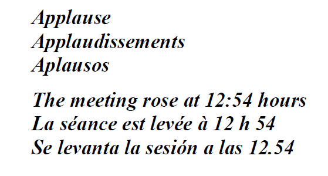 |
modelling | <debateBody> <debateSection eId="para_13" name="section"> <scene xml:lang="eng"> <remark xml:lang="eng" type="phenomenon" eId="remark_1" refersTo="#applause"> Applause</remark> <remark xml:lang="fra" type="phenomenon" eId="remark_2" alternativeTo="remark_1" refersTo="#applause">Applaudissements</remark> <remark xml:lang="esp" type="phenomenon" eId="remark_3" alternativeTo="remark_1" refersTo="#applause"> Aplausos</remark> </scene> </debateSection> <adjournment eId="adjournment_1"> <p xml:lang="eng" eId="p_1"> The meeting rose at <recordedTime time="2013-06-24T12:54:00+02:00" type="endTime"/> 12:54 hours </p> <p xml:lang="fra" eId="p_2" alternativeTo="#p_1"> La séance est levée à <recordedTime time="2013-06-24T12:54:00+00:00" type="endTime"/> 12 h 54 </p> <p xml:lang="esp" eId="p_3" alternativeTo="#p_1"> Se levanta la sesión a las <recordedTime time="2013-06-24T12:54:00+00:00" type="endTime"/>12.54</p> </adjournment> </debateSection> </debateBody> |
|
source |
|
modelling | <debateBody> <debateSection name="section"> <speech by="#smith" as="#presidentOfTheGA"> <from refersTo="#president">The President</from> <p>: The Assembly will now hear an address by the President of the Federative
Republic of Brazil.</p> </speech> <narrative> Ms. Dilma Rousseff, President of the Federative Republic of Brazil, was escorted to the rostrum.</narrative> <speech by="#rousseff" as="#president"> <from refersTo="#presidentOfBrazil">The President</from> <p>: President Rousseff <inline name="note" status="edited"> (spoke in Portuguese; English text provided by the delegation)</inline>: The 2030 Agenda for Sustainable Development (resolution 70/1) outlines the</p> </speech> </debateSection> </debateBody> |
note | We use <inline name="note" status="edited"> to markup the narrative "(spoke in Portuguese; English text provided by the delegation) because the element <narrative> as well as <scene> and <summary> cannot be used inside a <speech> element. |
|
source | 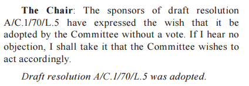 |
modelling | <debateBody> <debateSection name="section"> <speech by="#smith" as="#chair"> <from refersTo="#chair"> The Chair</from> <p>: The sponsors of draft resolution A/C.1/70/L.5 have expressed the wish that it be adopted by the Committee without a vote. If I hear no objection, I shall take it that the Committee wishes to act accordingly.</p> </speech> <narrative refersTo="#adoption">Draft resolution A/C.1/70/L.5 was adopted.</narrative> </debateSection> </debateBody> |
|
source | 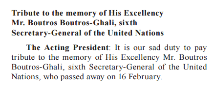 |
modelling | <debateBody> <debateSection name="section"> <heading>Tribute to the memory of His Excellency Mr. Boutros Boutros-Ghali, sixth Secretary-General of the United Nations </heading> <speech by="#smith" as="#president"> <from refersTo="#president">The Acting President</from> <p>: It is our sad duty to pay tribute to the memory of His Excellency Mr. Boutros Boutros-Ghali, sixth Secretary-General of the United Nations, who passed away on 16 February</p> </speech> </debateSection> </debateBody> |
|
|
source |
Omissis 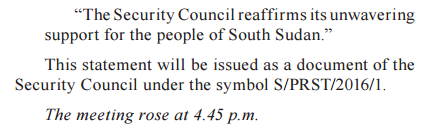 |
modelling | <debateBody> <debateSection name="section"> <heading> Reports of the Secretary-General on the Sudan and South Sudan </heading> <speech by="#smith" as="#president"> <from refersTo="#president">The President</from> <p>: The Security Council will now begin its consideration of the item on its agenda. </p> <p>After consultations among Council members, I have been authorized to make the following statement on their behalf: </p> <embeddedStructure inlineQuote="""> <p>The Security Council expresses deep alarm at the situation in South Sudan. </p> <p> Omissis </p> <p>The Security Council reaffirms its unwavering support for the people of South Sudan.</p> </embeddedStructure> </p> </speech> </debateSection> <block name="final" refersTo="#finalStatement">This statement will be issued as a document of the Security Council under the symbol S/PRST/2016/1.</block> <adjournment eId="adjournment_11"> <p eId="p_11">The meeting rose at <recordedTime time="2013-06-24T04:45:00+02:00" type="endTime"/>4.45 p.m. </p> </adjournment> </debateBody> |
|
|
source |
omissis 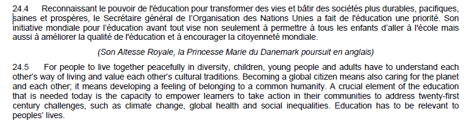 |
modelling | <debateBody> <debateSection name="chapter"> <debateSection eId="sec_23" xml:lang="eng" name="section"> <num>23</num> <heading>The Temporary President:</heading> <p>Your Royal Highness, Madam Chair of the Executive Board, Madam Director-General, Excellencies, ladies and gentlemen, it is my distinct honour and great pleasure to welcome to UNESCO Her Royal Highness Princess Marie, wife of Prince Joachim of Denmark. As many of you know, Princess Marie is the patron of honour of the Danish National Commission for UNESCO. Her Royal Highness is also a benefactor and patron of a great many other national organizations, institutions and foundations. The work of Princess Marie coincides with and reinforces the ideals of UNESCO. Her benevolent actions promote the intangible cultural heritage, education and literacy, and sports. Her Royal Highness is also the patron of cultural events, such as the Tønder international folk festival. She is promoting education as the ambassador of the University of Southern Denmark, and patron of the Danish annual literary prize. We are honoured to count Princess Marie among the true friends of the Organization and we are eager to hear her address to the General Conference. Your Royal Highness, welcome back to Paris and welcome home to UNESCO</p> </debateSection> <debateSection eId="sec_24-4" xml:lang="fra"> <num>24.4</num> <p>Reconnaissant le pouvoir de l'éducation pour transformer des vies et bâtir des sociétés plus durables, pacifiques, saines et prospères, le Secrétaire général de l’Organization des Nations Unies a fait de l'éducation une priorité. Son initiative mondiale pour l’éducation avant tout vise non seulement à permettre à tous les enfants d’aller à l'école mais aussi à améliorer la qualité de l'éducation et à encourager la citoyenneté mondiale.</p> </debateSection> <summary>(Son Altesse Royale, la Princesse Marie du Danemark poursuit en anglais)</summary> <debateSection eId="sec_24-5" name="section"> <num>24.6</num> <p>For people to live together peacefully in diversity, children, young people and adults have to understand each other’s way of living and value each other’s cultural traditions. Becoming a global citizen means also caring for the planet and each other; it means developing a feeling of belonging to a common humanity. A crucial element of the education that is needed today is the capacity to empower learners to take action in their communities to address twenty-first century challenges, such as climate change, global health and social inequalities. Education has to be relevant to peoples’ lives.</p> </debateSection> </debateSection> </debateBody> |
|
source | 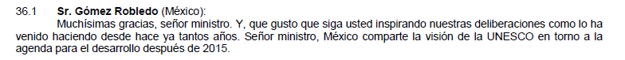 Omissis
|
modelling | <debateBody> <debateSection eId="sec_36-1" name="section"> <speech by="#gomez.robledo" xml:lang="spa" eId="speech_13" as="#memberMexico"> <num>36.1</num> <from refersTo="#gomez.robledo">Sr. Gómez Robledo (<organization refersTo="memberMexico">México</organization>):</from> <p>Muchísimas gracias, señor ministro. Y, que gusto que siga usted inspirando nuestras deliberaciones como lo ha venido haciendo desde hace ya tantos años. Señor ministro, México comparte la visión de la UNESCO en torno a la agenda para el desarrollo después de 2015.</p> </speech> Omissis <speech by="#gomez.robledo" xml:lang="spa" eId="speech_14" alternativeTo="#speech_13" as="#memberMexico"> <num>(36.1)</num> <from refersTo="#gomez.robledo"> Mr Gómez Robledo (<organization refersTo="memberMexico">Mexico</organization>)</from> <p> <inline status="edited" name="summary"> (translation from the Spanish)</inline>: Thank you very much, Mr Minister. I am pleased that you are still inspiring our deliberations as you done for so many years now. Mr Minister, Mexico shares UNESCO’s vison on the post-2015 development agenda.</p> </speech> </debateSection> </debateBody> |
|
The closing formula is usually just an editorial note, such as: "The meeting rose at {time}". in these types of documents, it is part of the main body. It should be modelled using the generic element <debateSection>, because there is no distinct conclusion in the sense of a closing formula that AKN expects. The <debateSection> should be qualified with @name attribute (e.g.<debateSection name="conclusion">) and the actual format wrapped by the <adjournment> element with time marked-up using the <recordedTime> element.
Examples
|
text | 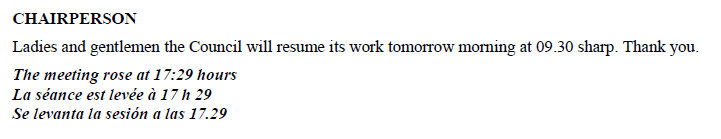 |
modelling | <debateBody> <debateSection eId="sec_45" name="section"> <speech by="#smith" to="#all" as="#chair" xml:lang="eng"> <from refersTo="#chiarperson">CHAIRPERSON </from> <p>Ladies and gentlemen the Council will resume its work tomorrow morning at 09.30 sharp. Thank you.</p> </speech> <adjournment eId="adjournment_21"> <p xml:lang="eng" eId="p_21"> The meeting rose at <recordedTime time="2013-06-24T17:29:00+00:00" type="endTime"/>17:29 hours </p> <p xml:lang="fra" eId="p_22" alternativeTo="#p_21">La séance est levée à <recordedTime time="2013-06-24T17:29:00+00:00" type="endTime"/>17 h 29 </p> <p xml:lang="esp" eId="p_23" alternativeTo="#p_21">Se levanta la sesión a las <recordedTime time="2013-06-24T17:29:00+00:00" type="endTime"/>17.29</p> </adjournment> </debateSection> </debateBody> |
|
The annexes block <attachments> </attachments> is meant to include annexed text that usually is located at the end of the main document. In the case of meeting records, these are typically lists of members, delegates, representatives, observers, and the like.
For information about element specific usage, see section 1.7 <attachments>.
|
source |
|
modelling | <attachments> <attachment> <preface> <p> <docNumber>I</docNumber> <docTitle eId="docTitle_1" xml:lang="fra">États membres</docTitle> <docTitle eId="docTitle_2" alternativeTo="docTitle_1" xml:lang="eng">
Member States</docTitle> <docTitle eId="docTitle_3" alternativeTo="docTitle_1" xml:lang="esp">
Estados Miembros</docTitle> </p> </preface> <mainBody> <tblock> <heading eId="heading_10">Afghanistan</heading> <heading eId="heading_12" alternativeTo="heading_10 xml:lang="fra">
Afganistán</heading> <heading eId="heading_13" alternativeTo="heading_10" xml:lang="rus">
Афганистан/ </heading> <table xml:lang="fra"> <caption>Délégués: </caption> <tr> <td> <p>S.Exc. M. Ghulam Farooq Wardak Ministre de l’Education nationale (Chef de la délégation)</p> </td> <td> <p>S.Exc. M. Mohammad Kacem Fazelly Ambassadeur, Délégué permanent Délégation permanente auprès de l’UNESCO (Chef adjoint de la délégation) </p> </td> </tr> </table> </tblock> </mainBody> </attachment> </attachments> |
|